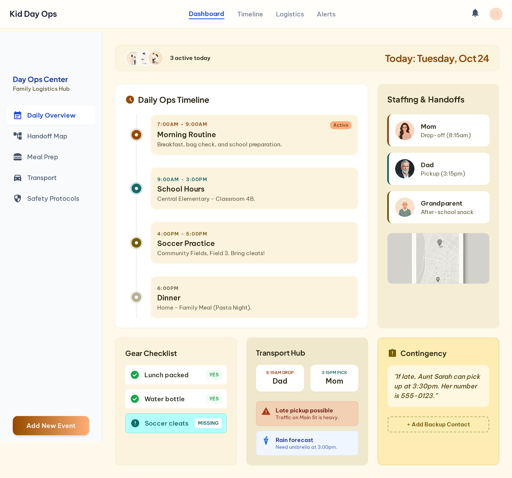

PF SAFE DEMO · 2026-03-23-p003
Kid Day Ops Planner
A family ops board that turns school, care, meals, and pickup logistics into one low-stress daily plan.
ingest status
Imported from Stitch exportOriginal Stitch output is archived, while the live demo path serves a local PF-safe shell with the approved visual screen.
- Source captured as local artifact
- Public demo path avoids remote CDN dependencies
- Preview generated from shipped screen image
